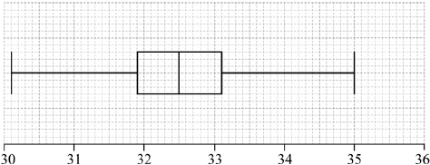

* This question is from an exam for a previous syllabus, and may contain minor differences in marking or structure.
(i) 32.5 (A1)
(ii) 31.9 (A1)
(iii) 33.1 (A1) (C3)
Note: Answers must be given correct to 1 decimal place.
[3 marks]

Note: Award (A1)(ft) for correct median, (A1)(ft) for correct quartiles and box, (A1) for correct end points of whiskers and straight whiskers.
Award at most (A1)(A1)(A0) if a horizontal line goes right through the box or if the whiskers are not well aligned with the midpoint of the box.
Follow through from part (a).
[3 marks]